COOKIE RECIPE
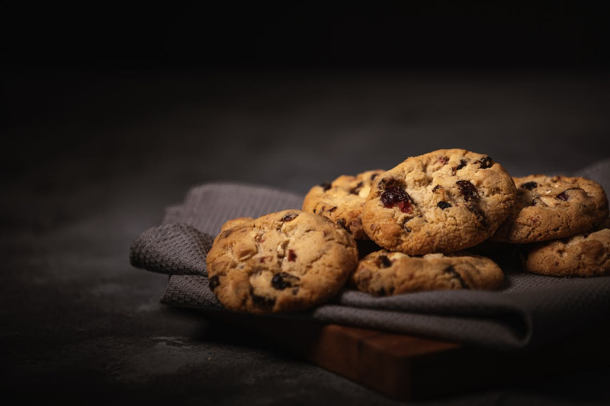 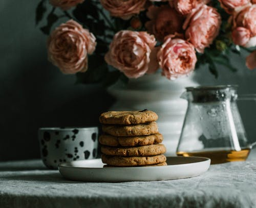 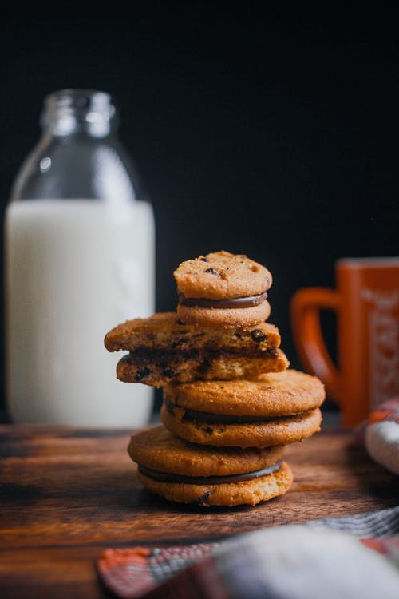 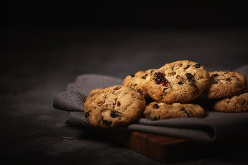In this project the goal in this project was to Continue developing good indentation and spacing habits while simultaneously exploring the anatomy of a basic website, and practice cloning Git repositories. To view click
MY FAVOURITE THINGS
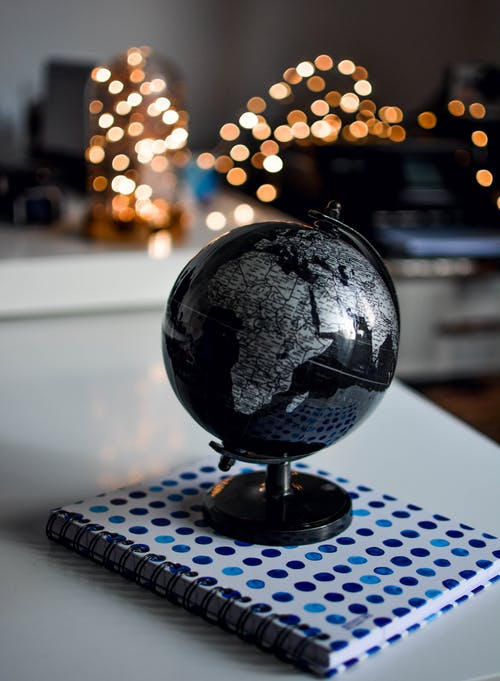 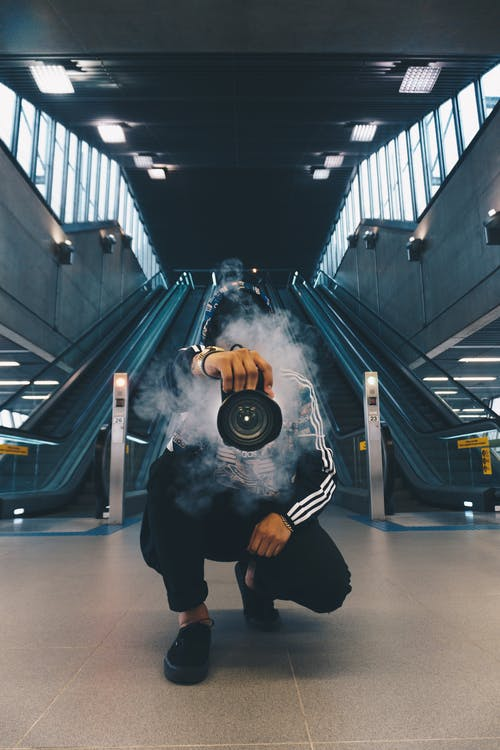 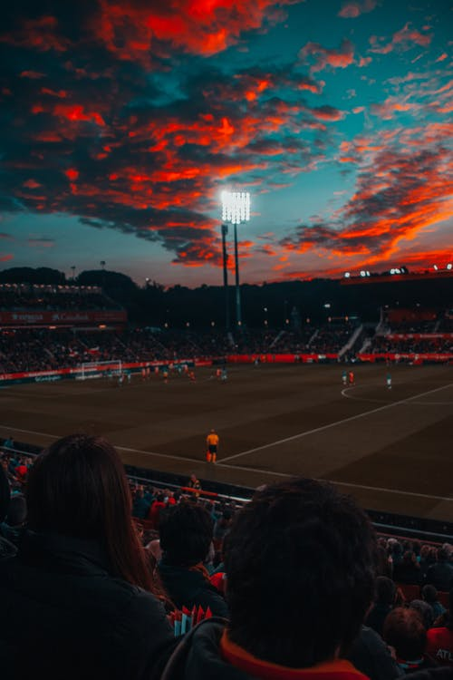How does something become my favourite thing? First, rather than considering it from the aspect of when(childhood objects tend to be more emotionally charged.) or where I considered it from my relationship, the why? and came up with this. The goal of this project was to create a webpage and familiarise myself with the process of creating a local repository and then linking it with a remote one all from the terminal on a linux distro. The results are here...
PET WEBSITE

 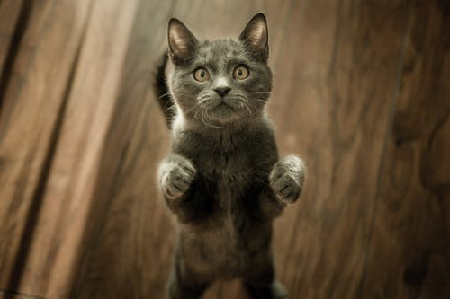
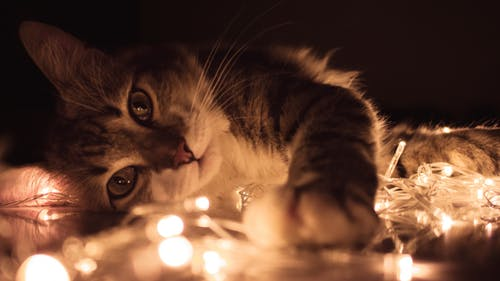
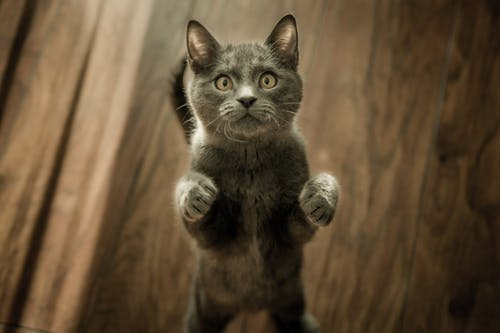
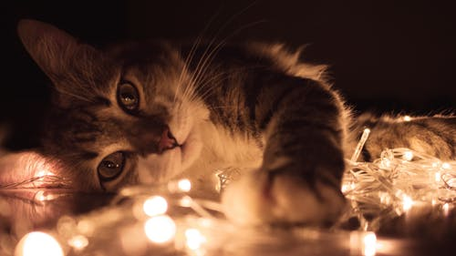
In its flawless grace and superior self-sufficiency I have seen a symbol of the perfect beauty and bland impersonality of the universe itself, objectively considered; and in its air of silent mystery there resides for me all the wonder and fascination of the unknown. The dog appeals to cheap and facile emotions; the cat to the deepest founts of imagination and cosmic perception in the human mind. In this project the goal was to look at elements that do not appear on their own line but share a line with other elements, to add text emphasis, links, and images to my page.
RESORT WEBSITE
 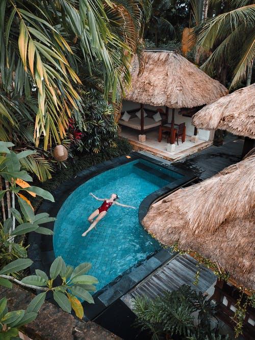
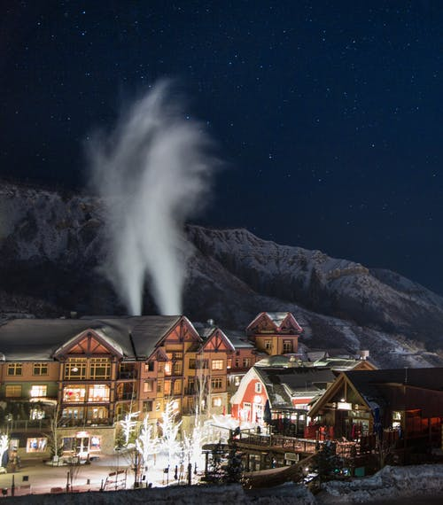
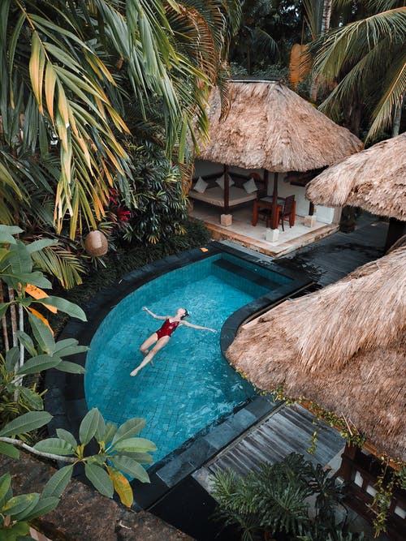
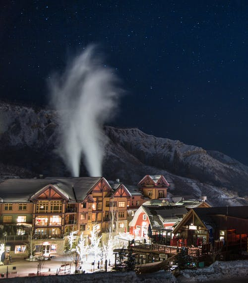
A Resort Hotel is a is a full service lodging facility, intended primarily for vacationers and usually located in places frequented for relaxation or recreation, such as beaches, seashores, scenic or historic areas, ski parks, spas.
TRAVEL AGENCY
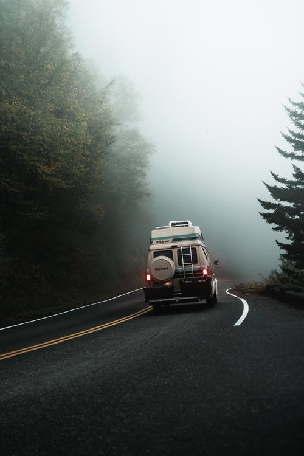 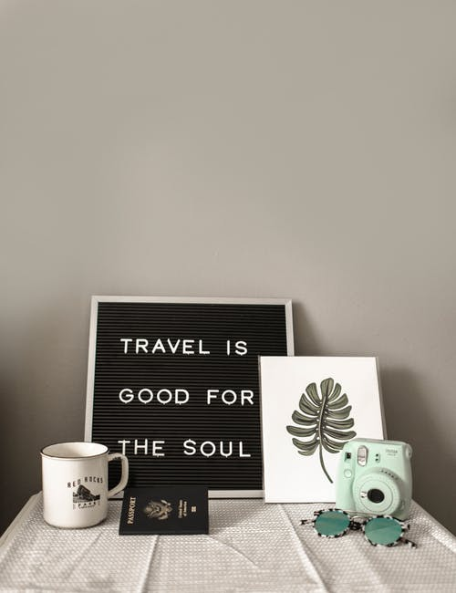 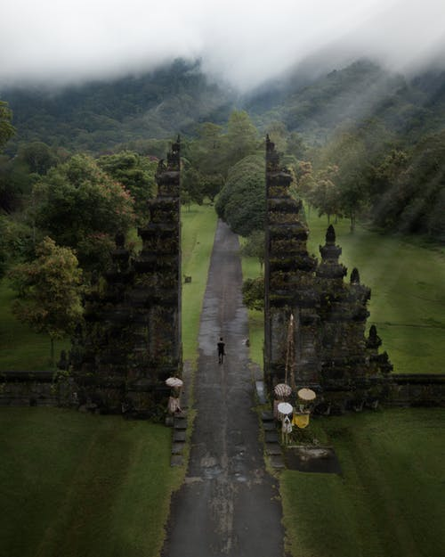 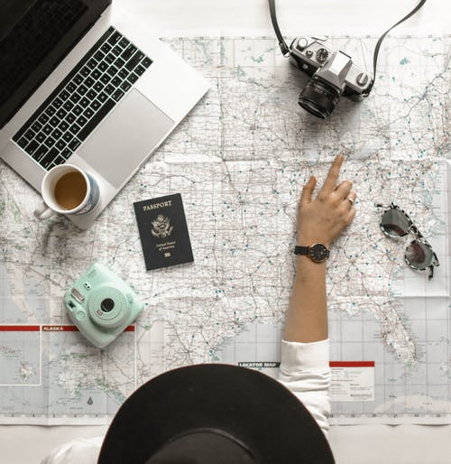A travel agency is a private retailer or public service that provides travel and tourism-related services to the general public on behalf of suppliers. Travel agencies can provide outdoor recreation activities, airlines, car rentals, cruise lines, hotels, railways, travel insurance, package tours, insurance, guide books, public transport timetables, car rentals, and bureau de change services.
NEWS ARTICLE
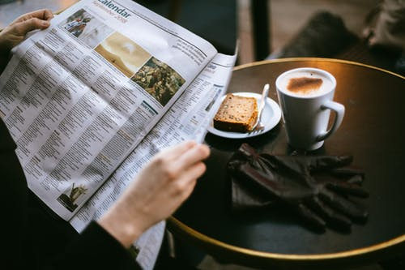 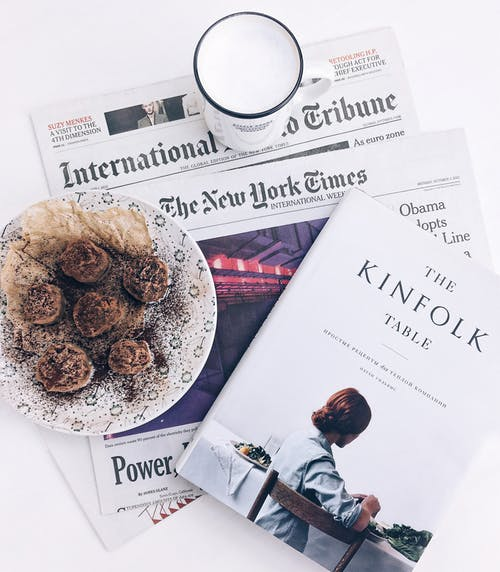
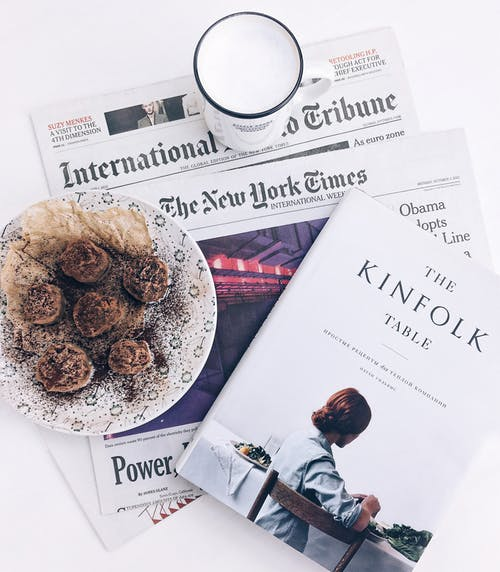
Journalism will continue to be hollowed out by structural shifts that have already led to significant falls in advertising revenue. Publishers are looking to subscriptions to make up the difference but the limits of this are likely to become apparent in 2019.
RESUME
 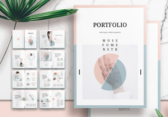
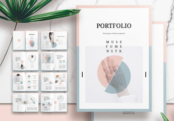
Also known a as job resume, a resume is a brief written summary of a job applicant’s past employment history, education, and other pertinent information. The term resume is used primarily in America, where it has taken the place of the Latin expression curriculum vitae, or CV.
BAND WEBSITE
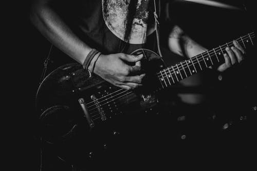 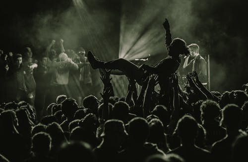Bands and musicians need to have a website that is attractive to visitors and provides all of the necessary information that fans will want to find.